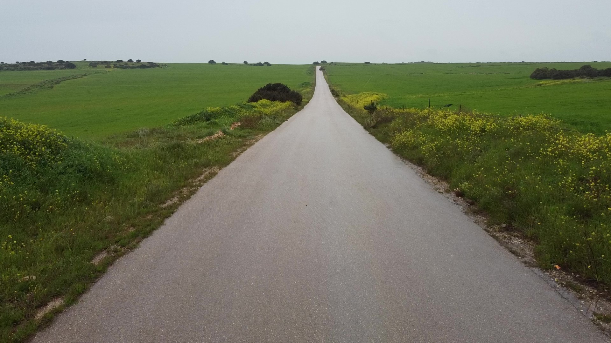
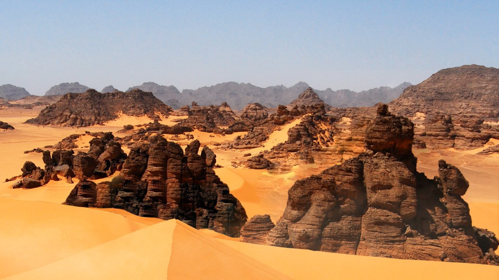
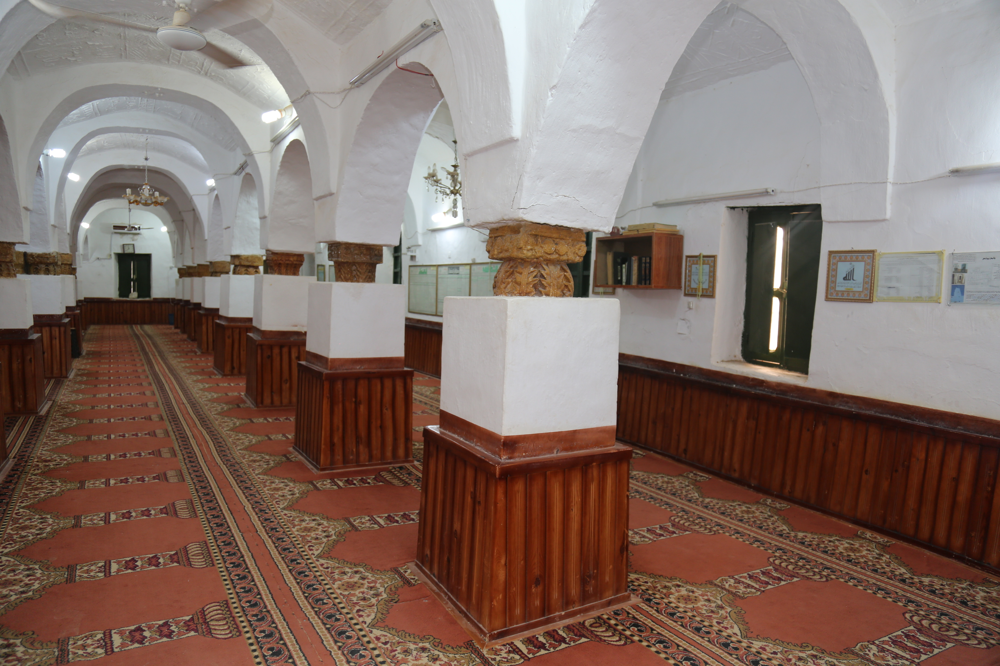

طرابلس
مدينة تجمع بين قوس ماركوس، السرايا الحمراء، الأسواق القديمة، والذاكرة المتوسطية.
- التجول في المدينة القديمة.
- زيارة قوس ماركوس والسرايا الحمراء.
- اكتشاف الأسواق والحرف.
- تذوق المطبخ المحلي.

Visit Libya - A Journey Through Time
ليبيا أرض الحضارات وموطن السحر والجمال
من عبق التاريخ إلى مستقبل واعد
من المتوسط إلى الصحراء، ومن المدن القديمة إلى الواحات، تبدأ الرحلة من هنا.

مدينة تجمع بين قوس ماركوس، السرايا الحمراء، الأسواق القديمة، والذاكرة المتوسطية.

جوهرة الصحراء ومدينة الطين الأبيض والشوارع المسقوفة وعبقرية التكيف مع البيئة.

جبال ونقوش وأقواس صخرية تحفظ ذاكرة الإنسان الأول في الصحراء الليبية.
إحدى أعظم المدن الأثرية في المتوسط، بمسرحها وحماماتها وساحاتها ومعابدها.

مدينة أثرية على البحر تشتهر بمسرحها الروماني ومشهدها المتوسطي الفريد.

أثينا أفريقيا، مدينة الأساطير والمعابد والمدافن الصخرية في قلب الجبل الأخضر.

غابات ووديان وشواطئ ومعالم أثرية في مشهد واحد.
بحيرات وكثبان وواحات تصنع واحدًا من أجمل مشاهد الصحراء الليبية.

واحة شرقية بطابع تراثي محلي، تجمع بين الضيافة والأسواق والحياة الواحية.
هنا تتحول العمارة الطينية إلى نظام حياة؛ شوارع مسقوفة، بيوت مزخرفة، وساحات تحفظ ذاكرة القوافل.

في قلب الصحراء، تروي النقوش الصخرية قصة الإنسان قبل الكتابة، وسط تكوينات طبيعية مدهشة.

أزقة وأسواق وجوامع وأبواب تفتح طبقات من الذاكرة المتوسطية في قلب العاصمة.

غابات ووديان وسواحل ومواقع أثرية تجعل الشرق الليبي تجربة طبيعية وثقافية واحدة.


رمال وبحيرات مالحة ومياه كبريتية ضمن ممارسات تقليدية تحتاج إرشادًا مختصًا.


يعكس الفلكلور الليبي تنوع المجتمع وثراء موروثه، من الفروسية الشعبية والأهازيج إلى الرقصات والمناسبات الاجتماعية.
يمثل اللباس التقليدي الليبي هوية بصرية وثقافية تختلف بين الساحل والجبل والصحراء، وتظهر بقوة في المناسبات والاحتفالات.

تشمل الصناعات التقليدية النحاسيات، الفخاريات، الصوفيات، الجلود، السعفيات، والفضيات، وهي انعكاس لحرفة الإنسان الليبي.
يتميز المطبخ الليبي بالبهارات والنكهات العميقة، ويجمع بين التأثير المتوسطي والروح الصحراوية.
تجمع الأسواق الليبية بين التجارة والحرفة والذاكرة الشعبية، من طرابلس وغريان إلى غدامس وغات وبنغازي ومصراتة.
تتنوع المهرجانات بين الخريف في هون وغات، ملاقة الربيع بسوكنة، مهرجان أوجلة، مهرجان جرمة، والفروسية.
استكشف ليبيا عبر خرائط تفاعلية تربط الوجهات والمواقع التراثية والطبيعية والخدمية.
اسأل عن الوجهات، البرامج، الثقافة، التراث، السلامة، أو المطبخ الليبي.